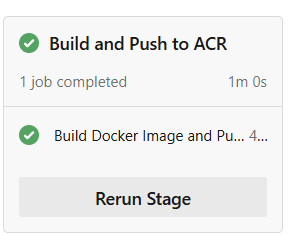

DEVOPS & CLOUD ENGINEER · BERLIN, DE
Cloud systems.
Delivery pipelines.
Proof included.
I’m Lokesh, a DevOps & Cloud Engineer in Berlin. Explore how I build delivery workflows, instrument applications, and troubleshoot the layers in between.
AWS · KUBERNETES · CI/CD · GITOPS
Short on time? Start with the 60-second overview
AZURE PIPELINE · ORIGINAL BUILD CAPTURE ↗30 seconds · localhost · 0 observed errors
Inside the platform Explore the interactive architecture +
A delivery path,
you can inspect.
Tap a layer to see the code behind it.
AWS / Azure / Kubernetes / Terraform / Argo CD / Prometheus
THE 60-SECOND VERSION
Three ways to
inspect my work.
Start with the integrated platform, inspect the delivery evidence, then look at how I debug.
Meet the engineerSELECTED WORK / 2026
Built. Tested.
Open to inspection.
Five source-linked projects and two AWS labs.
Each case study separates implementation,
observed results, and work still to validate.
No matching projects yet.
Try another skill or clear your search.
MEASURE BEFORE YOU CLAIM
Metrics with meaning.
Evidence with context.
A working system should tell you how it behaves.
Explore what is instrumented, what a query tells us,
and what still needs a real test.
No live cluster is connected to this portfolio. Query examples are measurement guides; no latency, uptime or improvement figures are invented.
THE WORK BEHIND THE GREEN CHECK
Failures are part
of the case study.
Documented fixes from the GitOps project.
Open a story to follow the symptom,
the change, and the verification boundary.
Run history, honestly: successful GitOps CI runs were recorded on 14 August 2026. The latest observed run, 15 September 2026, failed. A green image build alone does not prove a successful cloud deployment.
Inspect runs ↗A LITTLE ABOUT ME
Curious about the system.
Careful with the details.
I’m Lokesh, a Berlin-based DevOps & Cloud Engineer focused on opportunities in Germany. I enjoy understanding how infrastructure, delivery and operations fit together, especially when something fails between the layers.
This portfolio brings together my own cloud and Kubernetes projects. It shows the choices I made, the evidence I can share, and the gaps I still need to close.
- Location
- Berlin, Germany
- Focus
- DevOps · Cloud · Platform operations
- Education
- MSc Information Technology Management
BSBI, Berlin · April 2026 - Languages
- English · German A2 completed
LET’S BUILD SOMETHING RELIABLE
A good conversation
is a good start.
Hiring for DevOps or Cloud in Germany?
I’d be happy to walk you through the work.